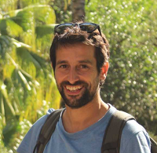
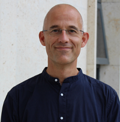
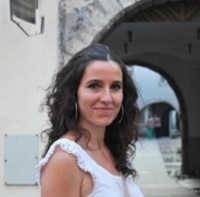
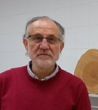
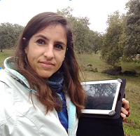
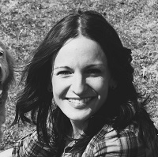
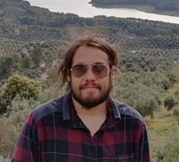

QUIENES SOMOS
Presentamos al equipo de trabajo principal de Desfutur
Pablo González-Moreno
IP del proyecto

Investigador Ramón y Cajal, Universidad de Córdoba - ha centrado su investigación en comprender la patrones espacio-temporales de plagas y especies invasoras en sistemas agrícolas y forestales en relación con los procesos naturales clave (regeneración, crecimiento y mortalidad). Tiene amplia experiencia en la modelización estadística avanzada y análisis espacial de datos ecológicos. PGM será el encargado de la coordinación del proyecto además de liderar las actividades relacionadas con las invasiones biológicas y de devolución de resultados.
https://orcid.org/0000-0001-9764-8927
Francisco Javier Bonet-García

Profesor Titular de Ecología Universidad de Córdoba - tiene amplia experiencia en la generación de información y conocimiento que contribuya a mejorar los procesos de toma de decisiones ambientales desde la escala local a la global, utilizando técnicas avanzadas de captura y procesamiento de datos. Asimismo, ha contribuido a la construcción de herramientas de monitoreo de los efectos del cambio global y ha participado activamente en redes de seguimiento de procesos biofísicos a escala local, nacional e internacional. También tiene experiencia en la simulación de la dinámica de ecosistemas forestales usando modelos basados en procesos. FJB coordinará la acción de modelización y simulación, así como la de traslación de los resultados de investigación a instrumentos de gestión.
Rocío Hernández-Clemente

Investigadora Ramón y Cajal, Universidad de Córdoba - es experta en teledetección aplicada al seguimiento del estado de los ecosistemas forestales y agrícolas con amplia experiencia en el seguimiento de procesos de decaimiento y recuperación post-incendio. Ha publicado 34 artículos en (SCI, SSCI) acumulando más de 1900 citas, 75% de los cuales en primer cuartil y participado en más de 24 proyectos de investigación (8 de ellos como IP). RHC será la encargada de coordinar la acción sobre recuperación tras incendios forestales.
https://orcid.org/0000-0002-4434-8346
Rafael M. Navarro-Cerrillo

Catedrático Universidad de Córdoba - es experto en restauración, ecofisiología y silvicultura mediterránea con especial interés en teledetección y redes de salud forestal. El Dr. Navarro ha publicado más de 120 artículos en revistas SCI de campos específicos y revistas multidisciplinares, que han recibido más de 6000 citas (índice H: 39; i10 140). Recientemente, ha sido reconocido como uno de los investigadores forestales más influyentes por el ranking de la Universidad de Stanford. RMN será el encargado de liderar la acción sobre incendios forestales.
https://orcid.org/0000-0003-3470-8640
Cristina Acosta-Muñoz

PhD(c) Investigadora de la Universidad de Córdoba - en el seguimiento y evaluación de ecosistemas forestales en el contexto de cambio climático y global, a partir de series temporales de datos de teledetección y modelamiento espacial. Su participación en diversidad de proyectos, le confiere una experiencia multidisciplinar y trasversal en el uso de tecnologías geoespaciales para la observación de la biodiversidad, decaimiento forestal, servicios ecosistémicos, incendios forestales, monitoreo y generación de alertas tempranas a riesgos naturales y riesgo agroclimático. CAM estará encargada de la línea de decaimiento forestal.
https://orcid.org/my-orcid?orcid=0000-0002-9796-6367
https://www.linkedin.com/in/cristina-acosta-muñoz/
María Suárez-Muñoz

Investigadora posdoctoral de la Universidad de Córdoba - trabaja con modelos de paisaje forestal en la simulación de la dinámica forestal bajo distintos escenarios climáticos y de gestión, principalmente en masas de coníferas. También cuenta con experiencia en modelización participativa y integración de información recopilada mediante la interacción con gestores y otros tomadores de decisiones. Ha particpado en diversos proyectos europeos con vocación de mejorar la colaboración entre investigadores mediante infraestrucuras de investigación, así como de fomentar la relación entre investigadores y gestores de espacios naturales. Se encargará de tareas de modelización en torno a los incendios forestales y el decaimiento, además de coordinar las actividades de ciencia traslacional.
https://orcid.org/0000-0003-1765-6885
Jessica Bernal-Borrego

PhD(c) Investigadora de la Universidad de Córdoba, especializada en geomática, modelado espacial y derecho ambiental. Su trabajo se centra en macroecología y modelado de la idoneidad del hábitat, con énfasis en la dinámica espaciotemporal de especies invasoras y su impacto en la desertificación en el sudeste de la Península Ibérica. Jessica combina su conocimiento en biología con tecnologías geoespaciales, contribuyendo significativamente en la planificación de la conservación, gestión de recursos naturales y legislación ambiental. Encargada del desarrollo de la línea de especies invasoras.
https://orcid.org/0000-0003-2800-7733
Edward Alexander Velasco-Pereira

PhD(c) Investigador de la Universidad de Córdoba - encargado del desarrollo de la línea de incendios.
https://orcid.org/0009-0002-3371-6147